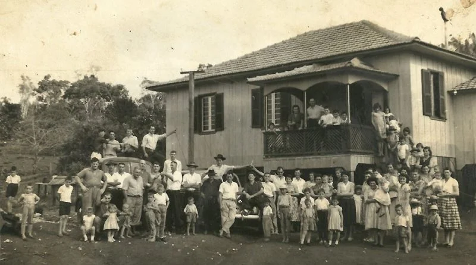

Scientific Development and Innovation
Reference region: Toledo, in western Paraná
Welcome! This website brings together information, reflections, and experiences about scientific development and innovation, focusing on Toledo, in western Paraná.
Science and technology are present in our daily lives, from farming and agribusiness to healthcare, education, and digital services. In Toledo and neighboring municipalities, this development is clearly visible. The region is recognized for its strong agribusiness sector and cooperatives, and it is home to higher education institutions, research centers, and companies that invest in new solutions. This combination creates an environment that encourages knowledge generation and its practical application.
Here, you will find content showing how scientific research becomes innovation, how it drives economic and social development, and what challenges and opportunities lie ahead for the region. Our goal is to bring science closer to the community, highlight local achievements, and inspire new ideas.
Get to know our team members through the About Us menu.
The Evolution of Technology in Toledo
The history of Toledo and western Paraná has always been closely connected to agriculture. Over the past decades, the modernization of farming and agribusiness, through more efficient machinery, crop improvement, stronger cooperatives, and, more recently, digital tools, has transformed the region into an important production hub. This foundation has helped foster a culture of investment in knowledge and new solutions.
